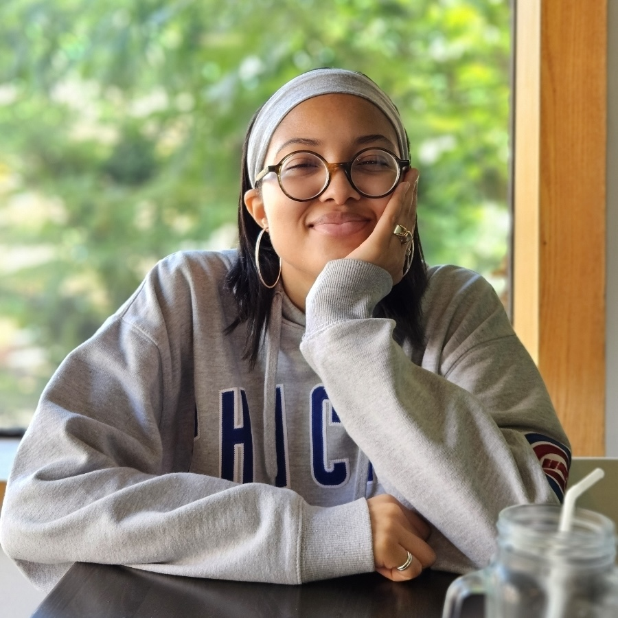
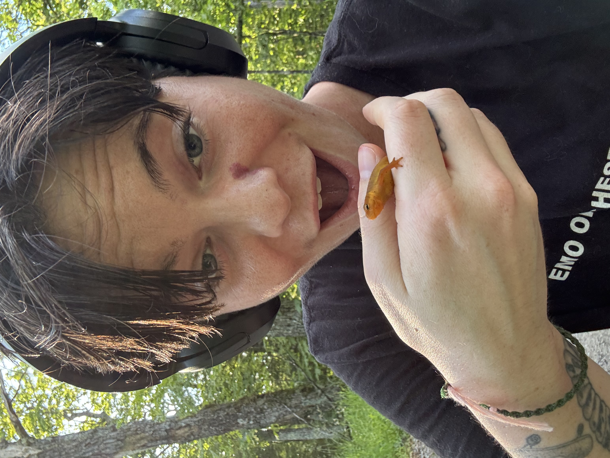
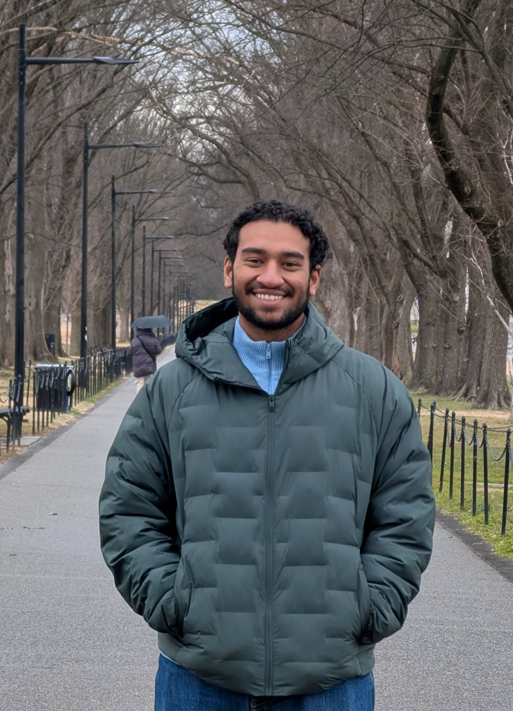
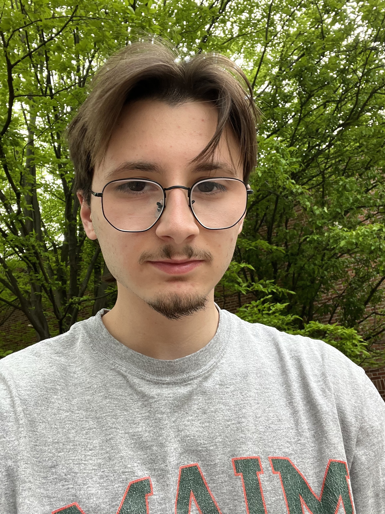

Lab members
See the timeline here.
Nicholas Landry, PI
Nicholas Landry is an Assistant Professor in the Biology Department at the University of Virginia. Nicholas is interested in the way that group interactions affect the dynamics of contagion spread, the structure of higher-order social systems, using data to inform mathematical models, and open-source software. Nicholas is one of the founding members of the XGI project, a software package for analyzing, modeling, and visualizing higher-order networks. Nicholas Landry was the TGIR Postdoctoral Research Fellow in the Vermont Complex Systems Center at the University of Vermont. Prior to his position at UVM, he completed a Ph.D. in Applied Mathematics at the University of Colorado Boulder. Nicholas also obtained a B.S. in Mechanical Engineering at the University of New Hampshire and worked as an engineer at a manufacturing company in Seacoast New Hampshire.
Daniel Kaiser, Postdoc
Daniel’s research interests are often evolving, currently including multi-dimensional higher-order interactions and lossy compressions, the role of homophily and complementarity in hypergraph growth, and community detection in hypergraphs. He is also interested in and maintains some projects concerning efficient multi-body ranking algorithms and surprising competitive outcomes, equitable transportation infrastructure through a field theory lens, and the creation of non-polarizing recommendation systems. Before joining the Landry Lab at UVA, Daniel completed a Ph.D. in Informatics at Indiana University under the supervision of Dr. Filippo Radicchi and a B.S. in Mathematics from the University of Michigan.
Ariana Craft, PhD Student

I am a neuroscience Ph.D. student in the Larson Lab, co-advised by Professor Landry, where I study neuroplasticity in songbirds. My research explores how bird song is learned, engrained, and transmitted across sub-populations throughout the United States. I am currently working to incorporate computational methods to compare biological vocal learning in birds with modeled systems to understand larger principles of not only communication but plasticity. Outside of the lab I enjoy cafe-hopping and reading.Charlotte Greene, PhD Student

Charlotte is as evolutionary biology and behavioral ecology PhD candidate being co-advised by Prof. Landry and Butch Brodie. They study environmental drivers of variation in sexual selection across space and time. Their work primarily focuses on the role of population demographics, age, and behavior in the evolution of weaponry in male forked fungus beetles. Charlotte is excited about expanding their research to apply contagion-based computational approaches to studying aggression and social behaviors. When not staring at beetles, Charlotte most enjoys running, dancing, and reading.Andy Grieve, PhD Student
 Andy is a 2nd year Ph.D. student in the Kasimatis Lab studying sexual conflict. He is an EXPAND fellow for the 2025-2026 academic year, co-advised by Prof. Landry. He is interested in how sexes share autosomal genetic material, but experience differentiated phenotypes. His studies focus on sexual conflict, and the molecular mechanisms that can reduce sexual conflict. Outside of the lab Andy enjoys trail running, rock climbing, and reading.
Andy is a 2nd year Ph.D. student in the Kasimatis Lab studying sexual conflict. He is an EXPAND fellow for the 2025-2026 academic year, co-advised by Prof. Landry. He is interested in how sexes share autosomal genetic material, but experience differentiated phenotypes. His studies focus on sexual conflict, and the molecular mechanisms that can reduce sexual conflict. Outside of the lab Andy enjoys trail running, rock climbing, and reading.
Abhay Gupta, PhD Student

I come from Delhi, India—a city full of energy and diversity. I completed my Master’s in Biology, during which I developed a strong interest in studying the evolution of adaptations using theoretical and computational approaches.My research so far has explored topics like sexual conflict, sexual convolution, cancer systems, and the evolution of sex-biased cooperation. Moving forward, I’m excited to expand my work during my PhD, combining both wet and dry lab methods to tackle questions in evolution and ecology. One area I’m particularly curious about is the evolution of contagion spread—whether in pathogens or ideas—exploring how opinions or diseases propagate within communities and eventually develop strategies to combat this spread (for the diseases). Outside the lab, you’ll find me deep into either video or board games, hunting for the best coffee and beer spots, or exploring cities and nature. I’m always up for a chat about evolutionary theories over a cold brew or a round of Avalon!
I’m looking forward to joining the lab, learning from everyone, and contributing to meaningful research!
Michael Leonard, PhD Student

Michael Leonard is a PhD student in Dr. Amanda Gibson’s Lab. He earned his B.S. in Biology from Rensselaer Polytechnic Institute in 2024, where he studied predator-prey interactions and how freshwater salinization shapes phenotypic plasticity in amphibians. Michael joined the Landry Lab in the Spring of 2025 and is broadly interested in studying host-parasite interactions, with a focus on the evolution of parasite-driven dispersal.Rudra Dave, Undergraduate Student
Rudra Dave is a second-year undergraduate majoring in Data Science on the pre-med track. He is particularly interested in understanding how diseases and ideas spread through networks, with a focus on group interactions. He uses Python tools, including XGI, to model these dynamics using higher-order networks.
Gelila Solomon, Undergraduate Student
Tyler Long, Undergraduate Student
Tyler Long is a first-year undergraduate pursuing a B.S. in Statistics. She is interested in the evolution of networks and the spread of information through social media, with future plans to apply this work to the study of diseases and pathogen spread. Outside of the lab, Tyler enjoys drawing and improving her personal record solving a Rubik’s cube.
You?
Are you interested in any of the lab’s research areas? If so, reach out to nicholas.landry@virginia.edu!
Lab Alumni
Undergraduate
- Ahmed Ahmed, Summer 2025
- Kuankuan Hu, PhD Student, Fall 2025